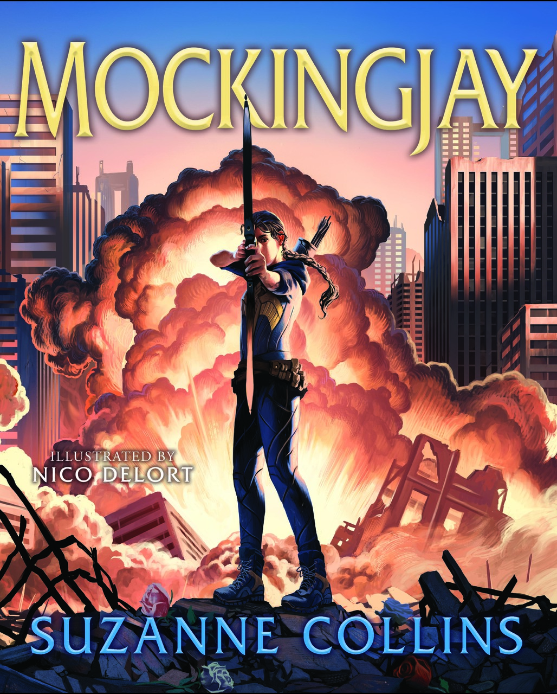
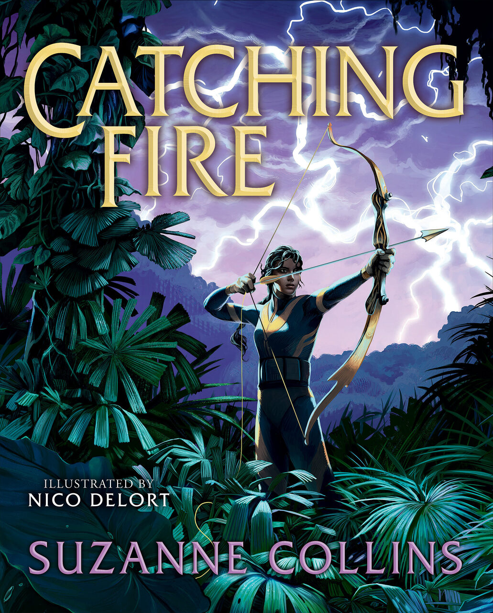
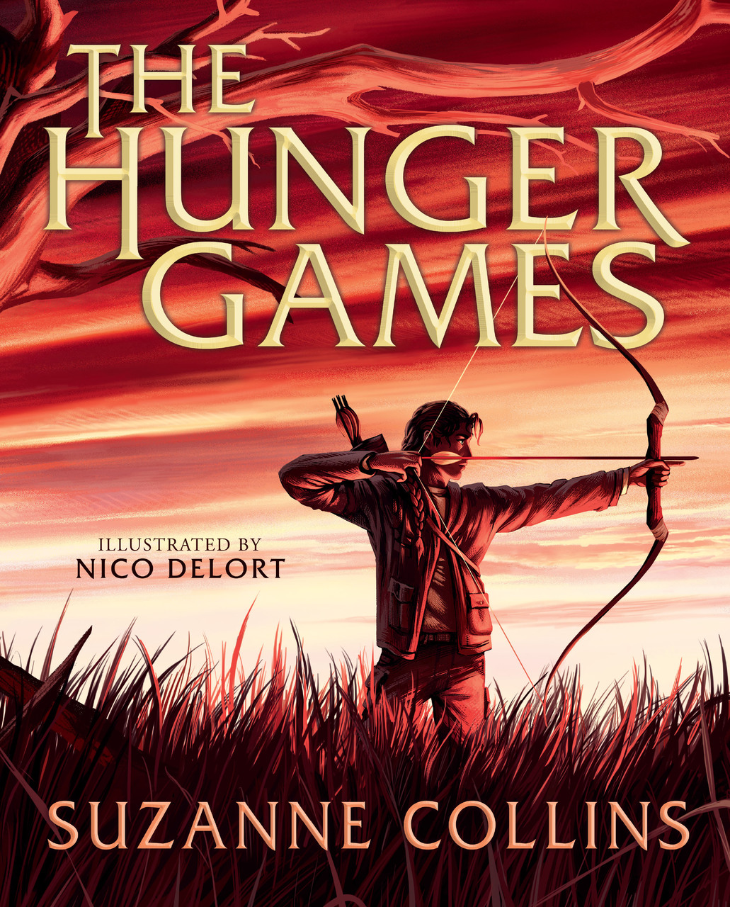

Home
Home
 About
About
 Books
Books
HG Ilustrado
A série Jogos Vorazes aparece pela primeira vez em uma edição ilustrada de luxo, com arte fascinante do artista internacionalmente aclamado Nico Delort. (Prensa Escolástica, 2024)
Mockingjay:
Illustrated Edition
as gravuras de madeira de Fritz Eichenberg para Wuthering Heights. Estou muito feliz com a impressionante obra de arte de arranha-céus em preto e branco de Nico Delort para The Hunger Games e sinto que terá a mesma influência duradoura em uma nova geração de leitores de Panem.

Catching Fire:
Illustrated Edition

The Hunger Games:
Illustrated Edition
